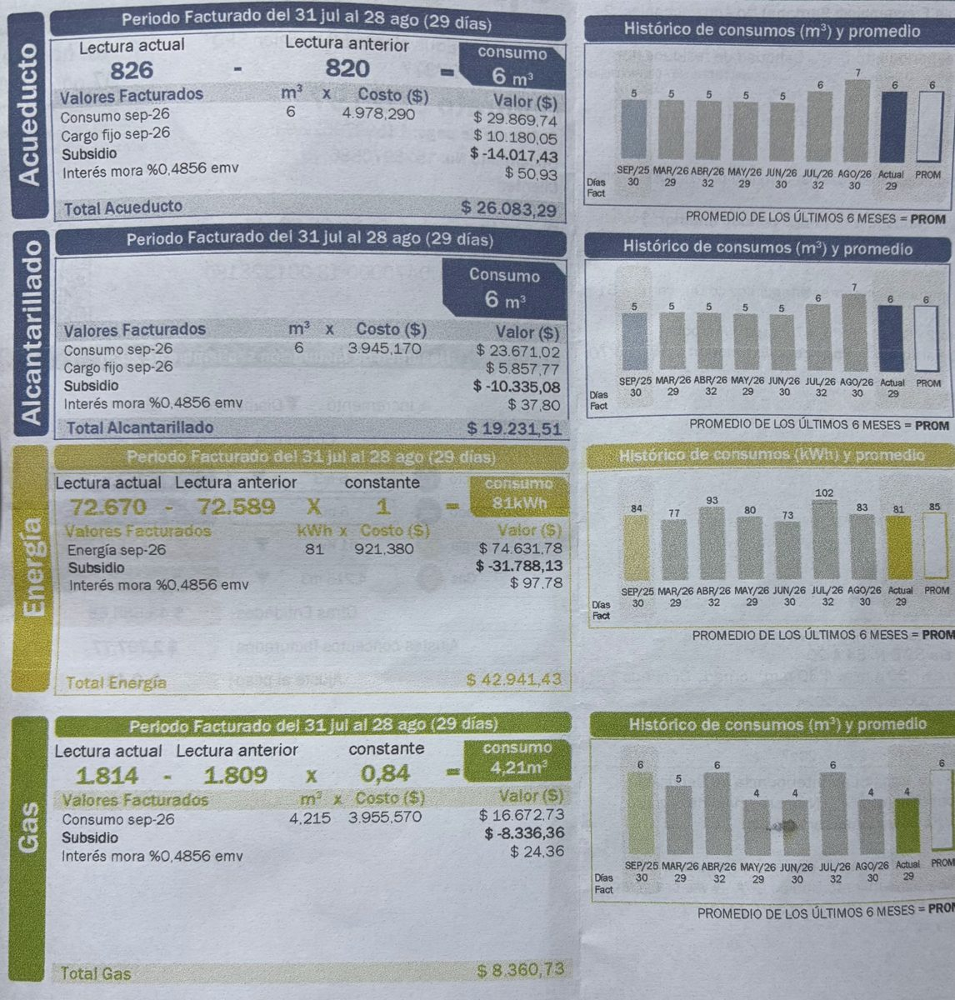
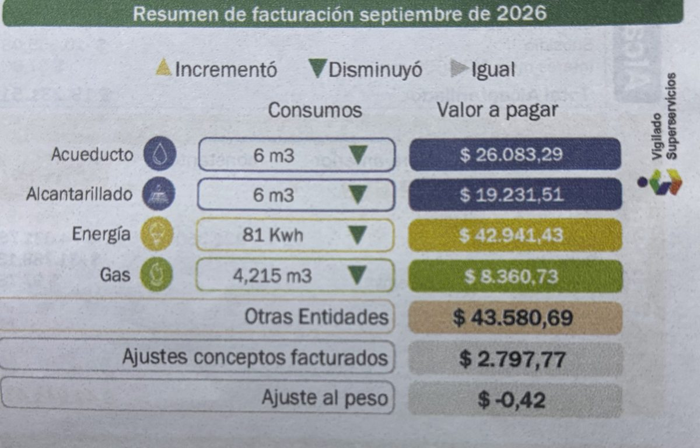

Mi factura de septiembre de 2026
Periodo facturado: del 31 de julio al 28 de agosto (29 días). Tapé el nombre, la dirección y el número de cuenta.


Historial de consumo de energía
| Mes | Días facturados | Consumo (kWh) | Valor pagado (COP) |
|---|---|---|---|
| Sep/25 | 30 | 84 | No aparece en la factura |
| Mar/26 | 29 | 77 | No aparece en la factura |
| Abr/26 | 32 | 93 | No aparece en la factura |
| May/26 | 29 | 80 | No aparece en la factura |
| Jun/26 | 30 | 73 | No aparece en la factura |
| Jul/26 Más alto | 32 | 102 | No aparece en la factura |
| Ago/26 | 30 | 83 | No aparece en la factura |
| Sep/26 (actual) | 29 | 81 | $42.941,43 |
| Promedio de los últimos 6 meses | 85 | No aparece en la factura | |
La factura solo trae el valor a pagar del mes actual; para los otros meses muestra únicamente los kWh.
| Concepto | Valor (COP) |
|---|---|
| Energía: 81 kWh × 921,38 | 74.631,78 |
| Subsidio | -31.788,13 |
| Intereses de mora | 97,78 |
| Total energía | 42.941,43 |
Mi proyección frente a la factura
Proyección de mis equipos: 69,9 kWh
en 29 días (16,87 kWh a la semana ÷ 7 × 29).
Factura: 81 kWh en 29 días.
La factura trae 11,1 kWh más de los que calculé con mis equipos. Es normal: en la tabla solo puse algunos equipos y no están todos los que consumen, como las luces, el router, otros cargadores o ventiladores, y el consumo de los equipos que quedan en espera.
Recomendaciones de ahorro para mi familia
Lo que podemos hacer
- Revisar qué pasó en julio: consumimos 102 kWh, el mes más alto, frente a 81 kWh en septiembre. Mantener el consumo cerca de 80 kWh ahorra unos 19.349 COP al mes a la tarifa actual.
- Reducir el uso del televisor, que es el equipo que más gasta (6,05 kWh a la semana). Si lo usamos 20 % menos, ahorramos unos 5,2 kWh al mes, cerca de 4.776 COP.
- Desconectar el cargador cuando no está cargando nada y apagar el televisor desde el botón, no dejarlo en espera.
- Hacer la lectura del contador cada semana y anotarla, para ver el consumo real y no esperar a la factura.